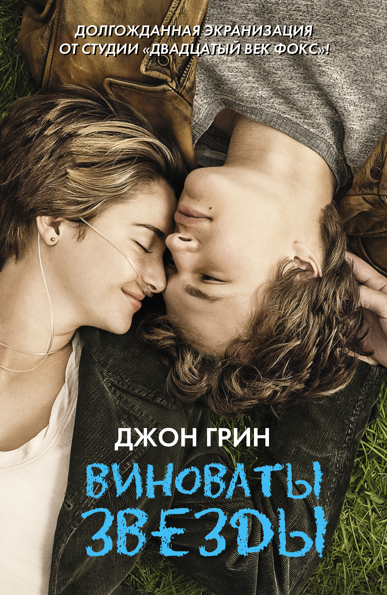

Книга «Виноваты звезды» посвящена Эстер Ёрл – другу Джона Грина, шестнадцатилетней девушке, умершей от рака щитовидной железы. В одном из интервью автор говорит о том, что история, им созданная, является вымышленной, а героиня и прототип – совершенно разные люди. Но в процессе знакомства с Эстер он вынес для себя очень много, что нашло отражение в книге: «Один из основных уроков, который я вынес, состоит в том, что даже очень короткая жизнь может быть очень богатой и разнообразной. Я узнал, что подростки куда более чуткие люди, чем я себе представлял. Они яснее представляют себе, что люди могут чувствовать, и более внимательны и обеспокоены чувствами других. Именно в этом им чаще всего отказывают взрослые по сложившейся привычке или традиции. Для меня как уже взрослого это было открытием» Ранее автор романа работал в онкологии и видел людей в самый пик страданий, когда кроме смерти уже нечего было ждать. Дружба с Эстер открыла ему другую сторону страдающих от тяжкого недуга людей. «Они по-прежнему люди со всеми обычными потребностями, привычками и желаниями. Все, что наполняет жизнь здорового человека, точно так же наполняет жизнь человека больного. Они также хотят быть любимыми, приобретать новый опыт и мечтать. Кроме их болезни, ничего отличного от остальных в них нет»3. Именно на это хотел обратить внимание автор, создавая произведение в память о друге, придумавшем «фразу-слоган: “Не забывай быть крутым”»4 (Don’t Forget To Be Awesome), которая стала девизом для целой субкультуры, объединившей подростков по всему миру.
